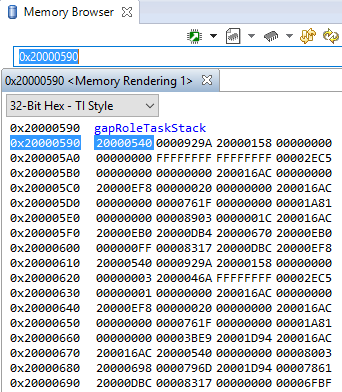
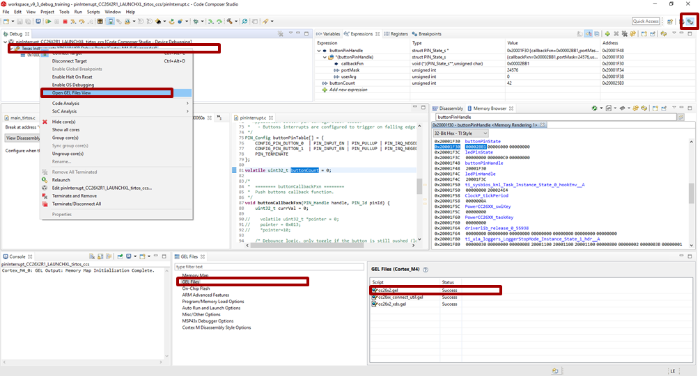
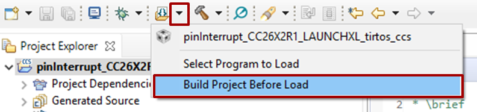

Debugging¶
This chapter covers debugging issues in TI-RTOS, using the debugging tools provided in the CCS and IAR IDEs and how to decipher CPU exceptions. For more information on how to understand and debug status codes from the RF driver, please see the Execution States and Status Codes chapter.
External Resources¶
- Debugging common application problems with TI-RTOS video presentation on training.ti.com.
Debug Interfaces¶
The CC2640R2 platform supports both the cJTAG and JTAG debug interfaces. Debug probes that support cJTAG, like the TI XDS110 and XDS100v3, can work natively with the CC2640R2. Other debug probes that only support JTAG, like the IAR I-Jet and Segger J-Link, need to inject a cJTAG sequence to enable JTAG functionality. The hardware resources included on the devices for debugging are listed as follows. Not all debugging functionality is available in all combinations of debug probe and IDE.
- Flash Patch and Breakpoint Unit (FPB) - 6 instruction comparators, 2 literal comparators
- Data Watchpoint and Trace Unit (DWT) - 5 watchpoints on memory access
- Instrumentation Trace Macrocell (ITM) - 32 x 32 bit stimulus registers
- Trace Port Interface Unit (TPIU) - serialization and time-stamping of DWT and ITM events
XDS110 Debug Probe¶
The CC2640R2F LaunchPad has an on-board XDS110, and this is the assumed debug probe for most development.
The XDS110 is the latest entry level debug probe (emulators) for TI embedded processors. Designed to be a complete solution that delivers JTAG and SWD connectivity at a low cost, the XDS110 is the debug probe of choice for entry-level debugging of TI microcontrollers, processors and SimpleLink devices. Also, both Core Processor and System Trace are available for all Arm and DSP devices that support Embedded Trace Buffer (ETB).
It is possible to buy the XDS110 as a standalone debugger. See the XDS110 JTAG Debug Probe product page.
Configuring Debugger in Code Composer Studio¶
If only one debug probe is attached, CCS will automatically select the
connected debug probe when a debug session is started. You can start a debug
session by clicking the debug icon  on the toolbar.
on the toolbar.
If more than one debug probe is attached when a debug session is started, CCS will prompt you to select a debug probe as seen in Figure 48. CCS will save the selected debug probe in the target configuration for the project.

To set or change the selected debug probe for a project, it is necessary to set the serial number for the probe in the project’s target configuration.
Find The Serial Number¶
To find the serial number for XDS110 debug probe, open a command prompt and run
the xdsdfu.exe command for your CCS version, e.g.
c:\ti\ccs_7_3_0_00019\ccsv7\ccs_base\common\uscif\xds110\xdsdfu.exe -e.
This will enumerate all the attached XDS110 debug probes. This should result in
output like the following.
C:\>c:\ti\ccs_7_3_0_00019\ccsv7\ccs_base\common\uscif\xds110\xdsdfu.exe -e
USB Device Firmware Upgrade Utility
Copyright (c) 2008-2015 Texas Instruments Incorporated. All rights reserved.
Scanning USB buses for supported XDS110 devices...
<<<< Device 0 >>>>
VID: 0x0451 PID: 0xbef3
Device Name: XDS110 Embed with CMSIS-DAP
Version: 2.3.0.9
Manufacturer: Texas Instruments
Serial Num: L1100017
Mode: Runtime
<<<< Device 1 >>>>
VID: 0x0451 PID: 0xbef3
Device Name: XDS110 Embed with CMSIS-DAP
Version: 2.3.0.9
Manufacturer: Texas Instruments
Serial Num: L11000EN
Mode: Runtime
Found 2 devices.
C:\>
For XDS100 series debug probes, open a command prompt and run the
xds100serial.exe command for your CCS version, e.g. c:\ti\ccs_7_3_0_00019
\ccsv7\ccs_base\common\uscif\xds100serial.exe. This should result in output
like the following:
C:\>c:\ti\ccs_7_3_0_00019\ccsv7\ccs_base\common\uscif\xds100serial.exe
Scanning for XDS100 emulators...
VID/PID Type Serial # Description
0403/a6d1 XDS100v3 06EB12213144 Texas Instruments XDS100v3
C:\>
Configure Serial Number¶
It may be necessary to set or unset the selected debug probe. Use the following steps to do this.
|

|
|
|
|

|
|

|
Connecting to the XDS Debugger¶
If only one debugger is attached, the IDE uses it automatically when you click
the  button in CCS or
button in CCS or  in IAR.
in IAR.
If multiple debuggers are connected, you must choose the individual debugger to use. The following steps detail how to select a debugger in CCS and IAR.
Configuring Debugger in IAR¶
If only one debugger is attached, IAR uses it automatically when you click the
 button.
button.
If more than one debug probe is connected, use the following steps to have IAR always prompt to select the connection.
- Open the project options (
Project→Options) - Go to the Debugger entry.
- Go to Extra options.
- Add the following command line option:
--drv_communication=USB:#select
Breakpoints¶
Comparators in the Flash Patch and Breakpoint Unit (FPB) of the CC2640R2F LaunchPad are used to break on an instruction fetch. This can be used to patch a function as it is fetched from instruction memory. Or these comparators can be used to supply a Breakpoint (BKPT) instruction to the CPU. These instructions halt the processors operation, waiting for the debug probe.
Considerations¶
While breakpoints are a useful tool for debugging code online, they have the possibility of altering the execution flow of a piece of code.
Breakpoints and Timing¶
Synchronous RF protocols are timing sensitive. Breakpoints can easily halt the execution long enough to lose network timing and break the link.
To still be able to debug, place breakpoints as close as possible to where the relevant debug information can be read or step through the relevant code segment to debug.
After you hit a breakpoint and read out the necessary debug information, it is recommended that you reset the device and re-establish the connection.
Breakpoints and Optimization¶
When compiler optimizations are enabled, toggling a breakpoint on a line of C code may not result in the expected behavior. Some examples include the following.
- Code is removed or not compiled in
- Toggling a breakpoint in the IDE results in a breakpoint somewhere other than the intended line. Some IDEs disable breakpoints on nonexistent code.
- Code block is part of a common subexpression
- A breakpoint might be trigged from a function or piece of code near the marked line. This might have been due to the compiler reusing sections.
- An if clause is represented by a conditional branch in assembly
- A breakpoint inside an if clause always breaks on the conditional statement, even when the condition is not true.
TI recommends selecting an optimization level as low as possible when debugging. See Optimizations for information on modifying optimization levels.
Breakpoints in CCS¶
Note
CCS reserves one hardware breakpoint for instruction stepping.
To toggle a breakpoint, do any of the following.
- Double-click the area to the left of the line number.
- Press
Ctrl+Shift+B. - Right-click on the line.
A breakpoint set on line 207 looks like the following.

Figure 49. Breakpoint on line 207. Debugger halted at start of main().
For an overview of the active and inactive breakpoints, click on View
→ Breakpoints.

Figure 50. List of breakpoints. Right-click to edit options, or de-select to deactivate.
To set a conditional break, do as follows.
- Right-click the breakpoint in the overview.
- Choose Properties.
When debugging, Skip Count and Condition can help skip a number of breaks or only break if a variable is a certain value.
Note
Conditional breaks require a debugger response and may halt the processor long enough to break an active RF connection, or otherwise disrupt timing on the debug target.
Breakpoints in IAR¶
Note
IAR reserves one comparator for instruction stepping.
To toggle a breakpoint, do any of the following.
- Single-click the area to the left of the line number.
- Go to the line and press
F9to toggle breakpoint - Right-click on the line and select Toggle Breakpoint (Code).
A breakpoint looks like this:

Figure 51. Breakpoint on PIN_init(). Debugger halted at start of main().
For an overview of the active and inactive breakpoints, click
View → Breakpoints.

Figure 52. List of breakpoints. Right-click to edit options, or de-select to deactivate.
To set a conditional break, do as follows.
- Right-click the breakpoint in the overview.
- Choose Edit….
When debugging, Skip Count and Condition can help skip a number of breaks or only break if a variable is a certain value.
Note
Conditional breaks require a debugger response and may halt the processor long enough to break an active RF connection, or otherwise disrupt timing on the debug target.
Watching Variables and Registers¶
Debuggers offer several ways of viewing the state of a halted program. Global variables are statically placed during link-time and can end up anywhere in the RAM or Flash of the chip. These variables can be viewed when then target is halted by the debugger through the Watch and Expression windows.
Unless removed due to optimizations, global variables are always available in these views. Local variables or variables that are only valid inside a limited scope are only viewable in that scope. Such variables can also be viewed with the Watch or Expression views, and may also be automatically displayed when breaking or stepping through code.
Considerations¶
Local variables are often placed in CPU registers and not on the stack. These variables also have a limited lifetime even within the scope in which they are valid. Depending on the optimization performed, a variable placed in a register may not have a cohesive view of the current state of the variable. Some possible solutions are:
- Move the variable to global scope, so it remains accessible in RAM.
- Make the variable volatile, so the compiler doesn’t place the value in a register.
- Make a shadow copy of the variable that is global and volatile.
Variables in CCS¶
You can view Global Variables by doing either of the following.
- Select
View→Expressions. - Select a variable name in code.
- Right-click and select Add Watch Expression.

Figure 53. Variable watch window. Note that you can cast values, get address and sizeof, etc.
- Select
View→Variablestoauto-variablesthat are present at the current location when stepping through code.

Figure 54. Local variables. This screenshot is taken during execution of the Simple Peripheral init function.
Variables in IAR¶
To view Global Variables, do either of the following.
- Right-click on the variable.
- Select Add to Watch: varName.
- Select
View→Watch- Enter the name of the variable.

Figure 55. Variable watch window. Note that you can cast values, get address and sizeof, etc.
View –> Locals show the local variables in IAR.

Figure 56. Local variables. This screenshot is taken during execution of the Simple Peripheral init function.
Note
IAR may remove the variable during optimization and inline the usage of the
value. If so, add the __root directive in front.
Memory Watchpoints¶
As mentioned in Debug Interfaces, the Data Watchpoint and Trace Unit (DWT module) contains four memory watchpoints that allow breakpoints on memory access. The hardware match functionality looks only at the address. If intended for use on a variable, the variable must be statically allocated.
Note
If a data watchpoint with value match is used, two of the four watchpoints are used.
Watchpoints in CCS¶
- Right-click on a global variable.
- Select
Breakpoint→Hardware Watchpoint. - Go to the list of breakpoints (
View→Breakpoints). - Right-click and edit the Breakpoint Properties to configure the watchpoint.

Figure 57. Adding a watchpoint on a variable.
This example configuration ensures that if 0x42 is written to the memory location for Characteristic 1 in the Bluetooth Low Energy simple_peripheral example project the device halts execution.

Figure 58. Configuring a hardware watchpoint to break on 8-bit write with value 0x42.
Watchpoints in IAR¶
- Right-click a variable (global).
- Select
Set Data Breakpoint for 'myVar'to add it to the active breakpoints. - Go to the list of breakpoints (View –> Breakpoints)
- Choose
Edit...to set up whether the watchpoint should match on read, write, or any access.
Figure 59. Configuring a hardware watchpoint to break on 8-bit write with value 0x42.
TI-RTOS Object Viewer¶
Debuggers may include the RTOS Object Viewer (ROV) plug-in that provides insight into the current state of TI-RTOS, including task states, stacks, and so forth.
This section discusses some ROV views useful for debugging and profiling. More details can be found in the TI-RTOS User’s Guide, including documentation on how to add log events to application code.
Scanning the BIOS for Errors¶
The BIOS Scan for errors view goes through the available ROV modules and
reports on errors. This functionality can be a good point to start if anything
has gone wrong. This scan only shows errors related to TI-RTOS modules and only
the errors it can catch.

Figure 60. Scan for errors. Here a Task Stack has been overrun.
Viewing the State of Each Task¶
The Task Detailed view is useful for seeing the state of each task and its
related runtime stack usage. This example shows the state the first time the
user-thread is called. Figure 61. shows the Bluetooth low
energy stack task, represented by its ICall proxy, the Idle task, the
simple_peripheral task and the GAPRole task.

Figure 61. Detailed view of the Tasks. Notice the address of the overrun task matches the instance id from Scan for errors.
The following list explains the column in Figure 61.
- address
- This column shows the memory location of the
Task_Structinstance for each task. - priority
- This column shows the TI-RTOS priority for the task.
- mode
- This column shows the current state of the task.
- fxn
- This column shows the name of the entry function of the task.
- arg0, arg1
- These columns show arbitrary values that can be given to entry function of the task. In the image, the ICall_taskEntry is given 0xb001, which is the flash location of the entry function of the RF stack image and 0x20003a30 (the location of bleUserCfg_t user0Cfg, defined in main()).
- stackPeak
- This column shows the maximum run-time stack memory used based on watermark in RAM, where the stacks are prefilled with 0xBE and there is a sentinel word at the end of the run-time stack.
Note
Function calls may push the stack pointer out of the run-time stack, but not actually write to the entire area. A stack peak near stackSize but not exceeding it may indicate stack overflow.
- stackSize
- This column shows the size of the runtime stack, configured when instantiating a task.
- stackBase
- This column shows the logical top of the runtime stack of the task (usage starts at stackBase + stackSize and grows down to this address).
Viewing the System Stack¶
The Hwi Module view allows profiling of the system stack used during boot
or for main(), Hwi execution, and Swi execution.

Figure 62. Viewing the System Stack in the Hwi view of ROV
The hwiStackPeak, hwiStackSize, and hwiStackBase can be used to check for system stack overflow.
ROV in CCS¶
To access the ROV while in a debug session in CCS:
- Click the Tools menu.
- Click RTOS Object View (ROV).
ROV in IAR¶
To access the ROV while in a debug session in IAR
- Use the TI-RTOS menu on the menu bar.
- Select a subview.
Using the Memory Browser¶
Debuggers are able to show a representation of the memory on the CC2640R2. In CCS, you can index by address or by symbol name. As an example, consider the stack that was overrun in Figure 61.:
Simple Peripheral Task’s stack. Note BE watermark |
GAPRole Task’s stack. Note it’s completely filled. |

|

|
The solution in this case would be to increase the stack size for the failing
task and see what the stack peak really is. The stackPeak reported is
relying on how many watermark bytes are overwritten, so it can’t know how much
the overrun amounts to.
Because stacks are utilized from higher addresses towards lower addressed (upwards in the picture), stacks that overrun will tend to overwrite data at locations immediately before the stack.
Connect the debugger to a running target¶
Connecting the debugger to a target can help when you want to see the status of your target after it has been running for several hours, or even days; or if you cannot reproduce a crash with the debugger attached. Once the debugger connected to the target, all the usual functionalities (break points, step-by-step, variable view, ROV, memory view…) are available.
This step-by-step guide will help you to configure CCS in order to connect to a running target
Modify the GEL file
In a very simplistic view, the GEL files describe the way the device’s debugger has to act (more details can be found in the CCS’s help). By default, the GEL files ask the device to reset when the debugger is started up. Fortunately we can modify this:
Identify the GEL file to modify
- Start a debug session as always
- (If needed), display the debug view
- Right-click on the program being, “Open GEL files View”.
- In the GEL files list, open the corresponding GEL file by double-clicking it. Chose cc26x2.gel for CC26x2 and CC13x2 devices. Chose cc26x0.gel for CC26x0 and CC13x0 devices.
Figure 63. Locate the GEL file to modify.
Figure 63. shows how to find the GEL file to modify.
Note
Another possibility consists in looking directly in
<CCS directory>\ccs_base\emulation\gelfor the GEL file.Caution
The modifications done in a GEL file affect all the devices using the same GEL files. In other words, it affects all the CC26X2 and CC13X2 if you modified cc26x2.gel, and all the CC26x0 and CC13x0 if you modified cc26x0.gel. By default, two different CCS versions do not use the same GEL files.
In the
StartUp()function, comment out the code executing the reset. If needed, an explicit comment will help you to identify the code to comment out.1 2 3 4 5 6 7 8 9 10 11 12 13 14 15 16 17 18 19 20 21 22 23 24 25 26 27 28 29 30 31
StartUp(int major, int minor, int patch) { /* Initialize memory map */ memorymap_init(); /* Debugger specific handling */ if(GEL_MatchesConnection(".*TIXDS.*") == 1) { GEL_LoadGel("$(GEL_file_dir)/cc26xx_connect_util.gel"); GEL_LoadGel("$(GEL_file_dir)/cc26x2_xds.gel"); DefineResets(0); // Issue Board Reset to ensure device is in a known state // Note: If you want to attach to a running target without resetting the // device, you must comment out the following 4 lines: // if(!GEL_IsConnected()) // { // GEL_AdvancedReset("Board Reset"); // } } else if(GEL_MatchesConnection(".*JLink.*") == 1) { GEL_LoadGel("$(GEL_file_dir)/cc26xx_jlink.gel"); } else { GEL_TextOut("Error: Unknown debugger.\n"); return; } }
Save your modification and close the file. Stop your debugging session
Caution
The modification of the debug configurations only affects one project.
Modify the Debug Configuration of your project
Once you have clicked CCS’s debug button (the green bug), CCS is doing a lot of actions for you. For example, CCS loads the program and stops the execution of the code on the target. In our case, we don’t want CCS to load the program (as we already have a running program…). In addition, we don’t necessarily want to stop the execution of the code on the target. Fortunately, the way CCS is running a debug session is highly configurable. So let’s adapt those configurations to our needs.
On the right of the Debug button, there is an arrow. Click this arrow and select Debug Configurations….
Select your project
Prevent CCS from loading the program: in the Program tab, chose the proper Loading options (Load symbols only)

Figure 64. Open the Debug configurations and modify the loading options.
Prevent CCS from stopping the target: in the Target tab, deselect the option Halt the target on a connect

Figure 65. In the Debug configurations, modify the Connection options.
[Optional] Prevent CCS from building the program before load
As no program will be loaded, it is a bit useless to ask CCS to build an image when you start a debug session. As result, you can disable this option by using the small arrow at the right of the Flash button. Click on Build Project Before Load in order to disable the option.
Figure 66. Disable “Build Project Before Load” option.
Now, the debug button does not anymore load code on the device. So, how can you load a new image on the device? The easiest way is to use the Flash button and select the image to flash. Don’t forget to rebuild your image manually (as we have disabled the option before). Another solution consists in undoing all the configuration changes we did before. A third solution consists in using a different version of CCS.
Tip
You are all set now! Let the code running and, when needed, connect to the running target by using the Debug button as you usually do.
Optimizations¶
Compiler optimizations are great for saving space or speeding up execution. However, these optimizations can be very difficult to debug around. There are multiple levels at which optimization can be turned on or off.
Project-wide optimization settings are the most general. Sometimes, given the constraints of the device, it is impossible to lower the size optimization level. File-wide optimization settings can be used like project-wide optimizations to turn on or off certain settings. The most granular control is using compiler directives to control optimization at a function level.
Optimizations in CCS¶
Project-Wide Optimizations¶
Open the project optimization settings by going to Project Properties
→ CCS Build → ARM Compiler → Optimization
Figure 67. Project-level optimization setting in CCS
Single-File Optimizations¶
Note
Do single-file optimizations with care because this also overrides the project-wide preprocessor symbols.
- Right-click on the file in the Workspace pane.
- Choose Properties.
- Change the optimization level of the file using the same menu in the CCS project-wide optimization menu.
Single-Function Optimizations¶
Warning
Pragmas are very specific to the toolchain, and may lead to non-reusable code. Be careful where you use these.
#pragma FUNCTION_OPTIONS(myFunction, "--opt_level=0")
static void myFunction(int number)
{
// ...
return yourFunction(other_number);
}
#pragma GCC push_options
#pragma GCC optimize ("O0")
static void myFunction(int number)
{
// ...
return yourFunction(other_number);
}
#pragma GCC pop_options
Optimizations in IAR¶
Project-Wide Optimizations¶
Project Options → C/C++ Compiler → Optimizations

Figure 68. Project-level optimization setting in IAR
Single-File Optimizations¶
- Right-click on the file in the Workspace pane.
- Choose Options.
- Check Override inherited Settings.
- Choose the optimization level.
Single-Function Optimizations¶
Warning
Pragmas are very specific to the toolchain, and may lead to non-reusable code. Be careful where you use these.
Use #pragma optimize=none before the function definition to deoptimize the entire function, that is, as follows.
#pragma optimize=none
static void myFunction(int number)
{
// ...
return yourFunction(other_number);
}
Loading TI-RTOS in ROM Symbols¶
Some of the TI-RTOS kernel modules are included in ROM, and executed from ROM in order to save Flash space for the application. This can lead to some confusion, when only addresses are shown in the disassembly view and the call-stack view.
In order to make sense of the code that executes out of ROM, you need to include the symbols file in your debug session, as explained next.
Import in CCS¶
Figure 69. Adding symbol information for the BIOS kernel in ROM, via Add Symbols.
- While in debug mode, click the drop-down button next to the Load Program icon
- Select
Add Symbols ... - Select
Browse ...and find the symbols file:
<SDK_INSTALL_DIR>\kernel\tirtos\packages\ti\sysbios\rom\cortexm\cc26xx\r2\golden\CC26xx\rtos_rom.xem3
Import in IAR¶

Figure 70. Adding symbol information for the BIOS kernel in ROM
- In the project options, go to
DebuggerandImages - Set Offset = 0 and check the box for ‘Debug info only’
- Then find the image file:
<SDK_INSTALL_DIR>\kernel\tirtos\packages\ti\sysbios\rom\cortexm\cc26xx\r2\golden\CC26xx\rtos_rom.xem3
Deciphering CPU Exceptions¶
Several possible exception causes exist. If an exception is caught, an exception handler function can be called. Depending on the project settings, this handler may be a default handler in ROM, which is just an infinite loop or a custom function called from this default handler instead of a loop.
When an exception occurs, the exception may be caught and halted in debug mode immediately, depending on the debugger. If the execution halted manually later through the Break debugger, it is then stopped within the exception handler loop.
Exception Cause¶
With the default setup using TI-RTOS, the exception cause can be found in the
System Control Space register group (CPU_SCS) in the register CFSR
(Configurable Fault Status Register). The Arm Cortex User Guide describes
this register. Most exception causes fall into the following three categories.
- Stack overflow or corruption leads to arbitrary code execution.
- Almost any exception is possible.
- A NULL pointer has been dereferenced and written to.
- Typically (IM)PRECISERR exceptions
- A peripheral module (like UART, Timer, and so forth) is accessed
without being powered.
- Typically (IM)PRECISERR exceptions
The CFSR register is available in View → Registers.
When an access violation occurs, the exception type is IMPRECISERR because writes to flash and peripheral memory regions are mostly buffered writes.
If the CFSR:BFARVALID flag is set when the exception occurs (typical for
PRECISERR), the BFAR register in CPU_SCS can be read out to find which
memory address caused the exception.
If the exception is IMPRECISERR, PRECISERR can be forced by manually disabling
buffered writes. Set CPU_SCS:ACTRL:DISDEFWBUF to 1, by either manually
setting the bit in the register view in the debugger or by including
<hw_cpu_scs.h> from Driverlib and calling the following.
#include <ti/devices/cc26x0r2/inc/hw_cpu_scs.h>
//..
int main()
{
// Disable write-buffering. Note that this negatively affect performance.
HWREG(CPU_SCS_BASE + CPU_SCS_O_ACTLR) = CPU_SCS_ACTLR_DISDEFWBUF;
// ..
}
Using TI-RTOS and ROV to Parse Exceptions¶
To enable exception decoding in the RTOS Object View (ROV) without using too much memory, use the Minimal exception handler in TI-RTOS. The default choice in the EasyLink projects is to use no exception handler.
To set this up, change the section of the TI-RTOS configuration file that relates to M3Hwi so that it looks like the code below:
//m3Hwi.enableException = true;
m3Hwi.enableException = false;
//m3Hwi.excHandlerFunc = null;
m3Hwi.excHookFunc = "&execHandlerHook";
Then, make a function somewhere with the signature void
(*Hwi_ExceptionHookFuncPtr)(Hwi_ExcContext*); such as the one below:
#include <ti/sysbios/family/arm/m3/Hwi.h>
// ...
volatile uintptr_t *excPC = 0;
volatile uintptr_t *excCaller = 0;
// ...
void execHandlerHook(Hwi_ExcContext *ctx)
{
excPC = ctx->pc; // Program counter where exception occurred
excCaller = ctx->lr; // Link Register when exception occurred
while(2);
}
Setting m3Hwi.enableException to false enables the minimal handler, which
fills out the global Hwi_ExcContext structure that the ROV looks at to show
the decoded exception. By setting up an excHookFunc, the minimal exception
handler will call this function and pass along a pointer to the exception
context for the user to work with. This structure is defined in
<ti/sysbios/family/arm/m3/Hwi.h>.
When an exception occurs, the device should end up in that infinite loop.
Inspect the ROV → Hwi → Exception information.

Figure 71. Decoded exception, intentional write to address 0x0013 which is illegal. Note that writebuffering has been disabled to get a precise error location, and that m3Hwi.enableException has been set to false to get the decoding.
In this case, a bus fault was forced in the function writeToAddress by dereferencing address 0x0013 and trying to write to it:
void writeToAddress(uintptr_t *addr, int val)
{
*(int *)addr = val;
}
// ..
void taskFxn(...)
{
// ..
writeToAddress( (void*)19, 4 ); // Randomly chosen values
}
The write instruction was placed on line 79 of application.c, as indicated. To
get a precise location, the write buffer was disabled as described earlier.
It can be instructive to look at the disassembly view for the locations specified by PC (program counter) and LR (link register). PC is the presumed exception location, and LR is normally the location the failing function should have returned to. As an example, the PC at this exception:

Figure 72. Here the pc from the decoded exception was looked up in the disassembly
view.
Some forensics is required here. We have from the Hwi decoding in ROV (and from
the exception context in the exception hook) that the program counter was
0x708e when the exception occurred.
At that location there is a store instruction str r0, [r1] meaning, store
in R0 the value of what the memory address in R1 points to. The business with
SP in the figure above is related to optimization being turned off, so all
local variables are stored on the stack, even though in this case R0 and R1
could have been used directly from the caller.
Now we know that the exception occurred because someone called
writeToAddress with an invalid address.
Thanks to the exception decoder we can easily find the call site by looking at
the call stack, but if the call stack isn’t helpful, we can look at lr,
which is seen in the exception decoder to be 0x198f
Figure 73. Call site as specified in lr. Note that lr is the instruction after the
call to writeToAddress because execution would have resumed here.
We can see here that R0 and R1 are initialized with constants. This means that some programmer has intentionally called the write function with an address that causes a busfault.
Most often the reason for a bus-fault is that a pointer is not initialized and
a function like writeToAddress gets the pointer, assumes it’s valid and
dereferences the pointer and writes to the invalid address.
Debugging RF Output¶
As mentioned in the CC13x0 CC26x0 SimpleLink Wireless MCU Technical Reference Manual, the RF output can be mapped to pins on the LaunchPad for RF signal debugging. These pins are intended to be used when connecting an RF range extender. However, they can also help in instances where it is unclear if the device is transmitting or receiving in the right window.
A full overview of the RF Core signals is given in Routing RF Core Signals to Physical Pins. The most useful signals for debugging are the LNA enable and Tx start signals. For debugging the RF driver, the synthesizer calibration signal may also be useful.
To enable RF output debugging, you will need to map the RF Core LNA enable and PA enable output or Tx start signals to a GPIO. See Listing 23. for an example of using DIO6 to output the LNA enable signal (logic high corresponds to an Rx) and DIO7 to output the Tx start (logic high corresponds to a Tx). These pins correspond to the Red (DIO6) and Green (DIO7) CC2640R2F LaunchPad LEDs and if the jumpers are connected, these LEDs will flicker to indicate RF activity. By connecting a logic analyzer to these pins, the RF activity over time can be recorded. If these pins are unavailable in your project, you can select any available DIO.
/******************************************************************************* * INCLUDES */ #include <driverlib/ioc.h> // ... int main() { /* * Add the following after Board_initGeneral(); * Be sure IOIDs used below are not used by any entries in PIN or * GPIO tables from the board files */ // Map LNA enable pin RFC_GPO0 to DIO6 IOCPortConfigureSet(IOID_6, IOC_PORT_RFC_GPO0, IOC_IOMODE_NORMAL); // Map Tx start pin RFC_GPO3 to DIO7 IOCPortConfigureSet(IOID_7, IOC_PORT_RFC_GPO3, IOC_IOMODE_NORMAL); // ... }
For more details, see the “External Signaling” chapter of the CC13x0 CC26x0 SimpleLink Wireless MCU Technical Reference Manual.